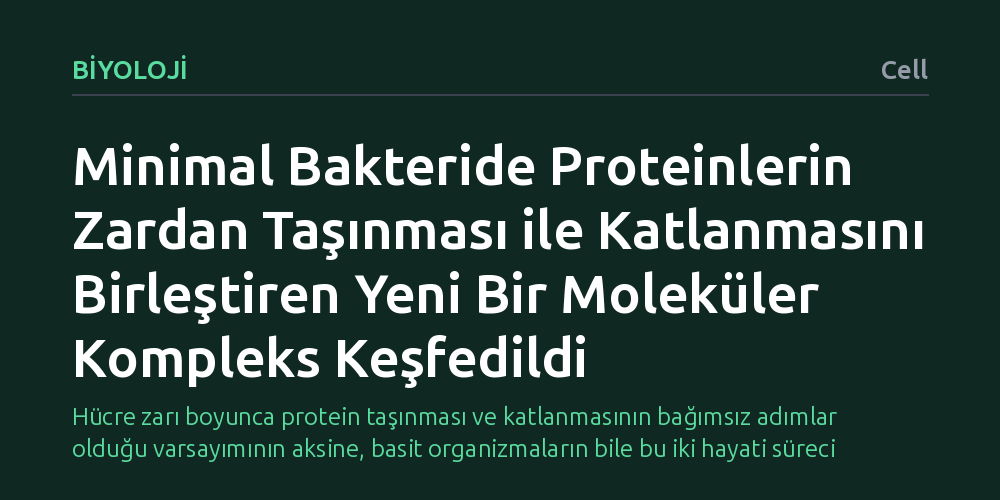

BIYOLOJI · Cell · 2026-10-14
Araştırmacılar, en basit bakterilerden Mycoplasma pneumoniae içinde işlevi bilinmeyen proteinleri hücresel ortamlarında görüntüleyerek haritaladı. Çalışmada, proteinlerin hücre zarından dışarı aktarılması ile hücre dışında doğru katlanmasını tek bir yapıda buluşturan yeni bir moleküler kompleks keşfedildi.
Hücre zarı boyunca protein taşınması ve katlanmasının bağımsız adımlar olduğu varsayımının aksine, basit organizmaların bile bu iki hayati süreci tek bir fiziksel kompleksle eşgüdümlü yönetebildiğini gösteriyor.

Hücreler canlılıklarını sürdürebilmek için yalnızca protein üretmekle yetinmez; ürettikleri bu molekülleri doğru hedeflere taşımak ve işlevsel üç boyutlu biçimlerine kavuşturmak zorundadır. Bakterilerde hücre zarı boyunca protein taşınması çoğunlukla iyi bilinen evrensel "Sec" yolağı aracılığıyla yürütülür. Ancak zardan dışarı aktarılan bir proteinin hücre dışı ortamda nasıl katlanıp işler hale geldiği, özellikle basit yapılı organizmalarda uzun süredir tam olarak aydınlatılamamış bir soru işaretiydi.
Geleneksel biyoloji anlayışı, proteinlerin hücre zarından geçişi (translokasyon) ile dış ortamda katlanmasını (katlanma/folding) birbirinden bağımsız iki ayrı basamak olarak ele alma eğilimindedir. Araştırmacılar, genomu bilinen en sade bakterilerden biri olan Mycoplasma pneumoniae üzerinde odaklanarak temel bir sorunun peşine düştü: Hücre zarında bulunan ve işlevi henüz bilinmeyen proteinler, bu iki süreci doğrudan birbirine bağlayan özel bir köprü vazifesi görüyor olabilir mi?
Bu sorunun yanıtı, canlılığın en yalın halinde dahi moleküler düzeyde nasıl bir organizasyon kurduğunu anlamak açısından büyük önem taşır. Eğer proteinin zardan çıkışı ile hücre dışında katlanması tek bir merkezden koordine ediliyorsa, hücresel biyolojide protein trafiğine ve zar mimarisine dair temel modellerin gözden geçirilmesi gerekir.
Biyolojik molekülleri laboratuvarda hücreden izole edip saflaştırarak incelemek uzun yıllardır standart bir yöntemdir; ancak bu işlem proteinlerin hücre içindeki özgün konumlarını ve diğer yapılarla kurdukları geçici ortaklıkları kaybetmelerine neden olabilir. Bu çalışmada araştırmacılar, proteini hücreden ayırmak yerine doğrudan hücrenin kendi doğal ortamında inceleyen "in-cell" elektron kriyotomografisi (Cryo-ET) tekniğinden yararlandı.
İncelenen Mycoplasma pneumoniae hücreleri, kristalize buz oluşumuna fırsat tanınmadan milisaniyeler içinde donduruldu. Böylece hücresel mimari ve protein kompleksleri canlılıktaki anlık halleriyle korundu. Ardından elektron mikroskobu altında farklı açılardan alınan iki boyutlu görüntüler bilgisayar ortamında birleştirilerek hücrenin üç boyutlu tomografik haritaları oluşturuldu.
Elde edilen bu yapısal veriler tek başına bırakılmadı. Araştırma ekibi tomografi görüntülerini kütle spektrometrisine dayalı proteomik analizler, protein yapı tahmin algoritmalarını içeren bütünleşik modelleme ve biyoinformatik taramalarla entegre etti. Bu çok katmanlı yaklaşım, hücre içinde daha önce işlevi bilinmeyen proteinlerin kimliğini ve birbiriyle kurdukları temas noktalarını saptamayı mümkün kıldı.
Yapılan analizler, Mycoplasma pneumoniae zarında alışılmışın dışında ("kanonik olmayan") bir mimariye sahip yeni bir protein kompleksinin varlığını ortaya koydu. Bu yapı, bilinen Sec protein taşıma kanalı ile hücre dışındaki katlanma mekanizmasını doğrudan fiziksel olarak birbirine bağlıyordu. Başka bir deyişle, protein zardan dışarı adımını atarken, onu karşılayıp doğru biçimde katlanmasını sağlayan mekanizma aynı çatı altında hazır bekliyordu.
Kompleksin dikkat çeken bir diğer özelliği ise işlevsel esnekliğiydi. Bakteri hücrelerinde protein taşınması genel olarak iki farklı yolla yürütülür: ya protein henüz ribozomda sentezlenirken eş zamanlı olarak zara aktarılır ya da sentez tamamlandıktan sonra taşınır. Keşfedilen yeni kompleksin, her iki aktarım mekanizmasını da destekleyebilecek yapısal uyumluluğa sahip olduğu belirlendi.
Böylece, zardan çıkış ve dış ortamdaki katlanma adımlarının birbirinden kopuk süreçler olmadığı, tek bir hibrit moleküler makine üzerinden kesintisiz biçimde yürütüldüğü ilk kez doğrudan bir bakteri hücresinin içinde gösterilmiş oldu.
Bu bulgu, minimal genomlu canlıların "ilkel ve basit" olduğu yönündeki yaygın kabulleri yeniden sorgulatıyor. Mycoplasma pneumoniae gibi kısıtlı sayıda gene sahip bir bakteri, sınırlı moleküler kaynaklarını azami verimle kullanarak taşıma ve katlanma gibi iki kritik görevi tek bir kompleks bünyesinde toplamayı başarmıştır. Bu durum, hücresel evrimde kaynak tasarrufunun getirdiği dikkate değer bir optimizasyon örneğidir.
Bununla birlikte, keşfedilen bu hibrit yapının yalnızca minimal bakterilere mi özgü olduğu yoksa diğer karmaşık patojenlerde de benzer mekanizmaların bulunup bulunmadığı henüz netlik kazanmamıştır. Hücre içi tomografi ve modelleme tekniklerinin ilerlemesiyle birlikte, gelecekte farklı mikroorganizmalarda da benzeri hücresel komplekslerin haritalanması beklenmektedir.